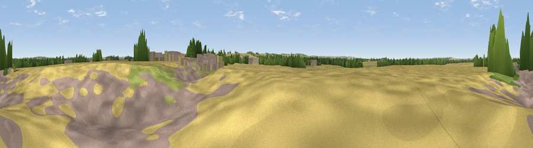

Farm Hill
#38821 in England · top 39% of its area beats it · near HeathfieldThe view, rendered

A 360° render of this exact spot computed from the terrain model, tree cover and land cover — summer colours, afternoon light, calibrated against photographs of famous viewpoints. Real trees, hedges and buildings will differ in detail.
The panorama
Grey silhouette: terrain skyline in each direction (720 bearings, Earth curvature and refraction included). Dashed green: skyline with trees (+15 m) and buildings (+8 m) as obstacles. Blue strip: how far the ground is visible on each bearing.
Where the view opens
Wedge length = distance to the farthest visible ground on that bearing (vegetation-aware). Rings at 10, 25 and 50 km.
What fills the view
63% cropland · 17% woodland · 12% grassland · 7% built-up
Angular shares of the visible panorama (visual magnitude), not map area. Landscape diversity 0.45 (0–1 Shannon).
Key numbers
More beautiful places nearby
The staircase of upgrades: each row has a higher view potential than everything closer. Driving times are estimates from straight-line distance, calibrated against real road routing — check an actual route before setting out.
| Place | Direction | Drive | Score |
|---|---|---|---|
| St Margaret's Mount | NNW · 4 km | ~9 min | 36.1 |
| Rowley's Hill | NW · 4 km | ~10 min | 43.1 |
| Pepperton Hill | S · 5 km | ~10 min | 44.0 |
| Viewpoint near Stapleford | NNE · 6 km | ~13 min | 54.8 |
| Viewpoint near Royston | WSW · 14 km | ~25 min | 56.6 |
| Viewpoint near Hexton | WSW · 38 km | ~57 min | 65.4 |
| Viewpoint near Church End | WSW · 52 km | ~74 min | 65.8 |
| Beacon Hill | WSW · 58 km | ~81 min | 74.1 |
52.10431, 0.13218 · source: osm peak · position refined by local search. Computed location — check access rights before visiting.